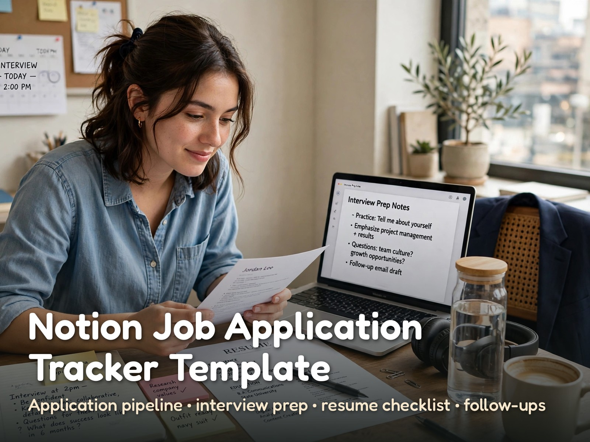

$12 USD — instant download
Notion Job Application Tracker Template — Application Pipeline, Interview Prep, Resume Checklist & Follow-Ups
Get it on GumroadA serious job search is dozens of moving pieces: applications sent at midnight, deadlines buried in email threads, a recruiter's name you meant to write down, an interview on Thursday you have not prepared for. Spreadsheets and memory both break under that load — usually right before the follow-up that mattered. This template puts the whole search in one Notion workspace, so you always know what you applied to, what stage it is at, and what your next move is.
The application pipeline database holds one entry per job — company, role, status (Wishlist → Applied → Interview → Offer → Rejected), application deadline, salary range, the contact person's name and the original posting link — with a board view grouped by status so your whole search is visible in one look. Every interview gets a prep page template: the role's key requirements, your matching stories, questions to ask them and a follow-up log, so prep starts from a structure instead of a blank page. The resume and document checklist covers everything a search needs — master resume, tailored versions, cover letter base, portfolio links, references, certificates — checked before you apply, not while the deadline is closing.
The weekly action review is a short page: applications sent, replies received, interviews landed, and the one number that predicts the rest — follow-ups due. A search that gets reviewed weekly does not quietly stall. Deadline and follow-up views sort the pipeline by deadline so nothing expires silently, and surface the applications waiting on your follow-up, because ‘applied and forgot’ is where offers go to die. The getting-started page sets you up in minutes: add the jobs you have already applied to, build your wishlist, complete the document checklist, and schedule your first weekly review.
Buy on Gumroad and download the PDF instantly. The PDF contains your template link: open it, click Duplicate in the top-right corner, and the whole system copies into your own Notion workspace â yours to edit, forever. You only need a free Notion account; everything in this template works on Notion's free plan, on phone, tablet and desktop. A getting-started page inside walks you through setup in minutes, so the template is working the same day you buy it. It is built for job seekers running a real search â fresh graduates applying in volume, career changers tracking a deliberate move, anyone whose current system is open tabs, email threads and hope. Honest note: a tracker organizes a search; it cannot get you hired, and no template can. What it removes is the chaos â the missed deadline, the forgotten follow-up, the interview you walked into unprepared.
This is a digital download — no physical item will be shipped. For personal use; please do not redistribute or resell the file.